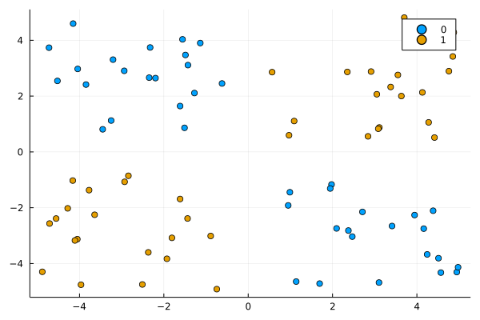
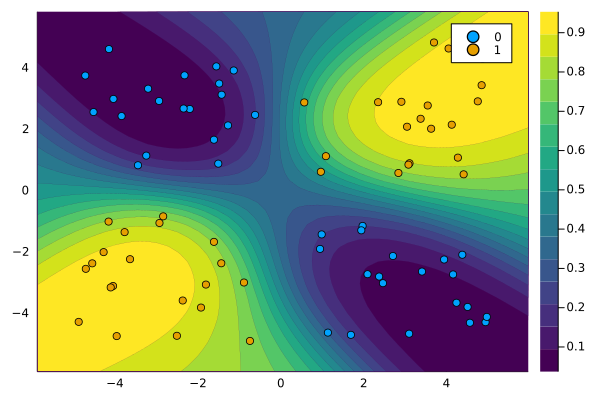
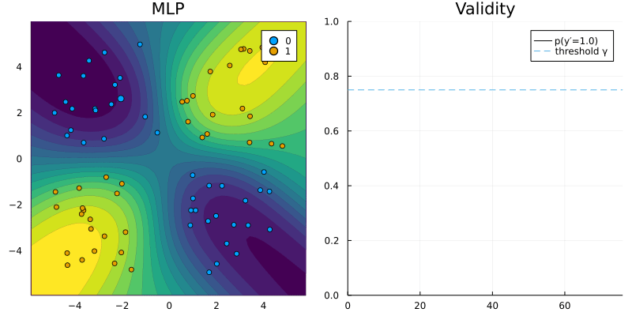
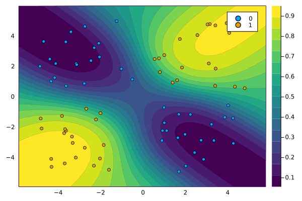

Models
Default models
There are currently constructors for two default models, which mainly serve illustrative purposes (Figure 1 below). Both take sets of estimated parameters at the point of instantiation: the constructors will not fit a model for you, but assume that you have already estimated the respective model yourself and have access to its parameter estimates. Based on the supplied parameters methods to predict logits and probabilities are already implemented and used in the counterfactual search.
For the simple logistic regression model logits are computed as a = X**w + b and probabilities are simply σ(a). For the Bayesian logistic regression model logits are computed as X**μ and the predictive posterior is computed through Laplace and Probit approximation.
Custom models
Apart from the default models you can use any arbitrary (differentiable) model and generate recourse in the same way as before. Only two steps are necessary to make your own Julia model compatible with this package:
- The model needs to be declared as a subtype of
CounterfactualExplanations.Models.AbstractFittedModel. - You need to extend the functions
CounterfactualExplanations.Models.logitsandCounterfactualExplanations.Models.probsto accept your custom model.
Below we will go through a simple example to see how this can be done in practice. In one of the following sections we will also see how to make model built and trained in other programming languages compatible with this library.
Neural network
In this example we will build a simple artificial neural network using Flux for a binary classification task. First we generate some toy data below. The code that generates this data was borrowed from a great tutorial about Bayesian neural networks provided by Turing.jl, which you may find here.
# Number of points to generate.
N = 80
M = round(Int, N / 4)
Random.seed!(1234)
using CounterfactualExplanations.Data
xs, ys = Data.toy_data_non_linear(N)
X = hcat(xs...)The plot below shows the generated samples in the 2D feature space where colours indicate the associated labels. CounterfactualExplanationsly this data is not linearly separable and the default LogisticModel would be ill-suited for this classification task.

Training the model
Instead, we will build a simple artificial neural network nn with one hidden layer using a simple helper function build_model.[1] For additional resources on how to do deep learning with Flux just have a look at their documentation.
nn = build_model(dropout=true,activation=Flux.σ)
loss(x, y) = Flux.Losses.logitbinarycrossentropy(nn(x), y)
ps = Flux.params(nn)
data = zip(xs,ys);The code below trains the neural network for the task at hand while keeping track of the training loss. Note that normally we would be interested in loss with respect to a validation data set. But since we are primarily interested in generating counterfactual explanations for a trained classifier here, we will just keep things very simple on the training side.
using Flux.Optimise: update!, ADAM
opt = ADAM()
epochs = 100
avg_loss(data) = mean(map(d -> loss(d[1],d[2]), data))
show_every = epochs/10
for epoch = 1:epochs
for d in data
gs = gradient(params(nn)) do
l = loss(d...)
end
update!(opt, params(nn), gs)
end
if epoch % show_every == 0
println("Epoch " * string(epoch))
@show avg_loss(data)
end
endGenerating counterfactuals
Now it‚Äôs game time: we have a fitted model M‚ÄÑ:‚ÄÑùí≥‚Äтܶ‚ÄÑùí¥ and are interested in generating recourse for some individual x‚ÄÑ‚àà‚ÄÑùí≥. As mentioned above we need to do a bit more work to prepare the model for use with our package.
The code below takes care of all of that: in step 1) it declares our model as a subtype of Models.AbstractFittedModel and in step 2) it just extends the two functions.
using CounterfactualExplanations, CounterfactualExplanations.Models
import CounterfactualExplanations.Models: logits, probs # import functions in order to extend
# Step 1)
struct NeuralNetwork <: Models.AbstractFittedModel
nn::Any
end
# Step 2)
logits(M::NeuralNetwork, X::AbstractArray) = M.nn(X)
probs(M::NeuralNetwork, X::AbstractArray)= σ.(logits(M, X))
M = NeuralNetwork(nn)The plot below shows the predicted probabilities in the feature domain. Evidently, our simple neural network is doing well on the training data.

To preprocess the data for use with our package we simply run the following:
counterfactual_data = CounterfactualData(X,ys')Now we just select a random sample from our data and based on its current label we set as our target the opposite label.
using Random
Random.seed!(123)
x = select_factual(counterfactual_data, rand(1:size(X)[2]))
y = round(probs(M, x)[1])
target = ifelse(y==1.0,0.0,1.0) # opposite label as targetThen finally we use the GenericGenerator to generate counterfactual. The plot further below shows the resulting counterfactual path.
# Define generator:
generator = GenericGenerator()
# Generate recourse:
counterfactual = generate_counterfactual(x, target, counterfactual_data, M, generator)
Ensemble of neural networks
In the context of Bayesian classifiers the GreedyGenerator can be used since minimizing the predictive uncertainty acts as a proxy for realism and unambiquity. In other words, if we have a model that incorporates uncertainty, we can generate realistic counterfactuals without the need for a complexity penalty.
One efficient way to produce uncertainty estimates in the context of deep learning is to simply use an ensemble of artificial neural networks, also referred to as deep ensemble (Lakshminarayanan, Pritzel, and Blundell 2016). To this end, we can use the build_model function from above repeatedly to compose an ensemble of K neural networks:
ensemble = build_ensemble(5;kw=(dropout=true,activation=Flux.σ))Training this ensemble boils down to training each neural network separately:
ensemble, anim = forward(ensemble, data, opt, n_epochs=epochs, plot_every=show_every); # fit the ensemble
gif(anim, joinpath(www_path, "models_ensemble_loss.gif"), fps=10)
Once again it is straight-forward to make the model compatible with the package. Note that for an ensemble model the predicted logits and probabilities are just averages over predictions produced by all K models.
# Step 1)
struct FittedEnsemble <: Models.AbstractFittedModel
ensemble::AbstractArray
end
# Step 2)
logits(M::FittedEnsemble, X::AbstractArray) = mean(Flux.flatten(Flux.stack([nn(X) for nn in M.ensemble],1)),dims=1)
probs(M::FittedEnsemble, X::AbstractArray) = mean(Flux.flatten(Flux.stack([σ.(nn(X)) for nn in M.ensemble],1)),dims=1)
M=FittedEnsemble(ensemble)Again we plot the predicted probabilities in the feature domain. As expected the ensemble is more conservative because it incorporates uncertainty: the predicted probabilities splash out more than before, especially in regions that are not populated by samples.

Finally, we use the GreedyGenerator for the counterfactual search.
generator = GreedyGenerator(Dict(:δ=>0.1,:n=>30))
counterfactual = generate_counterfactual(x, target, counterfactual_data, M, generator)References
Lakshminarayanan, Balaji, Alexander Pritzel, and Charles Blundell. 2016. “Simple and Scalable Predictive Uncertainty Estimation Using Deep Ensembles.” arXiv Preprint arXiv:1612.01474.
[1] Helper functions like this one are not part of our package functionality. They can be found here.